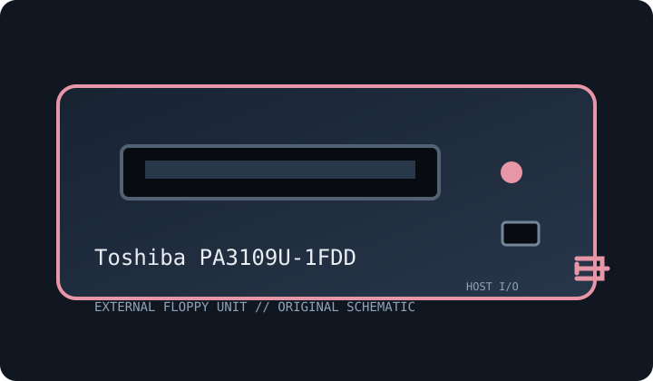

[ FLOPPY DRIVES // IDENTIFIED EXTERNAL MODEL ]
Toshiba PA3109U-1FDD USB Floppy Disk Drive
Model-specific archive record. Enclosure labels do not always identify the installed mechanism or host controller; preserve the full suffix and inspect the unit before connection or service.

MODEL IDENTIFICATION: Toshiba PA3109U-1FDD. Photograph the nameplate, serial, connector and power rating. Verify revision-specific instructions and inspect any replacement mechanism before use.
Recorded specifications
| Exact model | Toshiba PA3109U-1FDD |
|---|---|
| Drive size / type | 3.5-inch external floppy drive. |
| Capacity / formats | 1.44 MB high-density and 720 KB double-density PC formats, subject to OS driver and media condition. |
| Interface / controller | USB external bridge/controller with conventional block access; not raw-flux imaging. |
| Power | USB bus-powered in normal configuration; avoid unpowered hubs and confirm current rating on the drive label/manual. |
| Host OS / system compatibility | USB-capable PC operating systems with a compatible floppy driver; boot support depends on system BIOS/UEFI. Older OSes may need OEM drivers. |
| Cable / connectors | Model-specific USB cable or attached lead; internal 34-pin connector is not exposed. |
Compatibility and preservation caveats
USB bridges may not support unusual geometries, copy protection or non-PC layouts. Preserve full model suffix and driver version.
Inspect for corrosion, contamination, cracked plastics, damaged shutter, cable strain and prior repairs. Do not insert damaged media. Record host, OS, controller/driver, drive label, revision, media condition and acquisition settings. Preserve original images and document conversions separately.
Manufacturer manuals & archive references
- Toshiba / Dynabook Support Portal — search PA3109U-1FDDManufacturer support portal; search by complete model for legacy documentation.
- USB Implementers Forum — USB DocumentsUSB interface standards reference; not a Toshiba capacity table.
Sources are described by scope; a support portal or related-family manual does not establish every model-specific rating. Prefer a complete matching manual and unit label over family-level assumptions.